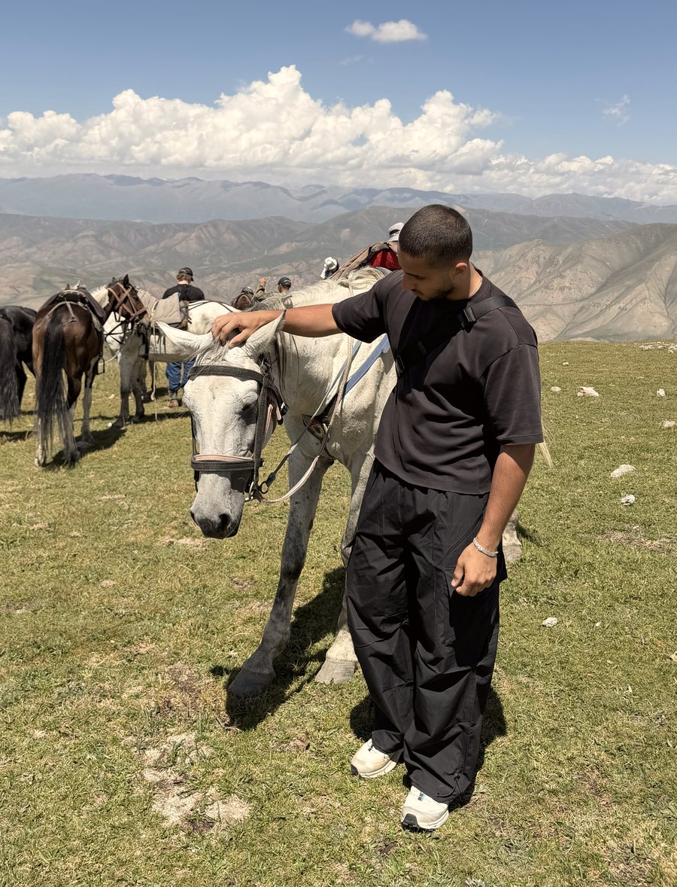

Für Menschen, die nicht mehr weiterwissen.
Du warst bei Ärzten, hast Diagnosen bekommen, nimmst Tabletten. Und trotzdem hat dir niemand gezeigt, wie du dein Leben zurückbekommst. Genau dort fange ich an.
Fünf Menschen. Nicht mehr.
Wer zu mir kommt, hat meistens zu viele kurze Termine hinter sich. Ich mache das Gegenteil: Ich nehme mir die Zeit, die dein Fall braucht, bis ich wirklich verstehe, wie du lebst und warum es dir so geht.
Zeit
Kein Zeitlimit im Gespräch. Ich höre zu, bis ich deine ganze Geschichte kenne.
Verständnis
Ich schaue nicht auf einen Wert, sondern auf dich: Körper, Kopf, Alltag und Vergangenheit.
Erreichbarkeit
Nicht zu Sprechzeiten, sondern dann, wenn du mich brauchst. Per Nachricht oder Anruf.
Vielleicht erkennst du dich wieder.
Du nickst bei einem oder mehr Punkten? Schreib mir.
Deinen Fall schildern →An die Wurzel. Nicht an die Oberfläche.
Vier Schritte, die bei jedem gleich beginnen und bei jedem anders aussehen.
Erstgespräch
Du erzählst, ich höre zu. Danach wissen wir beide, ob ich dir wirklich helfen kann.
Tiefenanalyse
Per Call. Blutbild und Befunde, Tagesablauf, Ernährung, Schlaf, Stress, Psyche. Deine ganze Geschichte.
Dein Protocol
Ernährung, Training, Supplement-Empfehlungen und ein Einkaufssystem, gebaut für genau dein Leben. Du musst nicht mehr raten, nur noch umsetzen.
Begleitung
Ich bin für dich erreichbar und passe deinen Plan an, sobald dein Körper oder dein Alltag es verlangt. Du bist damit nicht allein.
Alles, was du brauchst. Nichts, was du suchen musst.
Ernährungsplan
Auf Grundlage deiner Blutwerte und Befunde, zugeschnitten auf deinen Alltag.
Trainingsplan
Für deinen Körper und dein Level. Von zu Hause bis Gym.
Einkaufssystem
Du weißt im Laden genau, was in den Korb kommt und was nicht.
Kopf & Gewohnheiten
Muster erkennen, alte Gewohnheiten ersetzen, dranbleiben.
Supplemente
Gezielte Empfehlungen, abgeleitet aus deinen Werten. Nicht nach Gefühl, nicht auf Vorrat.
Direkter Draht
Nachricht oder Anruf, und dein Plan wird angepasst, sobald etwas nicht passt.

Ich stelle die Fragen, die sonst keiner stellt.
Leistungssport begleitet mich, seit ich sechs Jahre alt bin. Fußball hat mir früh gezeigt, was ein Körper leisten kann, wenn man ihn versteht.
Irgendwann habe ich angefangen, alles andere auch zu hinterfragen. Warum werden so viele Menschen krank? Warum endet so oft alles bei einer Tablette und so selten bei der Frage nach dem Warum?
Seitdem habe ich über 1.000 Stunden in Ernährung, Training und die Hintergründe von Krankheiten investiert und mein eigenes Leben danach ausgerichtet. Heute begleite ich Menschen, die selbst keinen Weg mehr sehen.
Eine Nachricht reicht.
Erzähl mir, was du hast, was du schon versucht hast und wo du hinwillst. Ich lese jede Nachricht persönlich.
Nachricht auf Instagram → Aktuell alle 5 Plätze vergeben · Besondere Fälle prüfe ich trotzdem